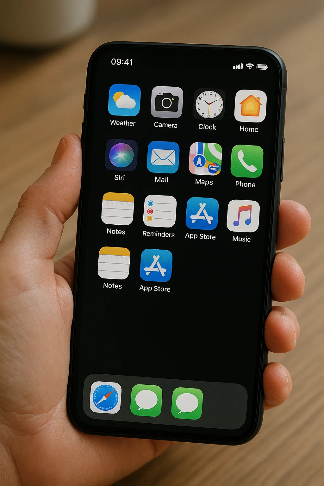
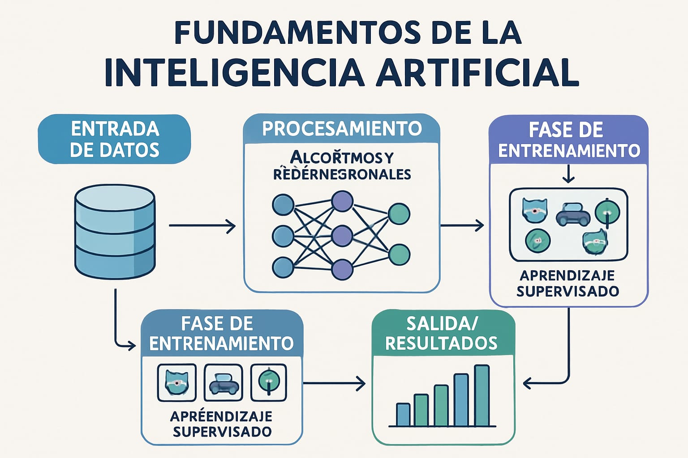
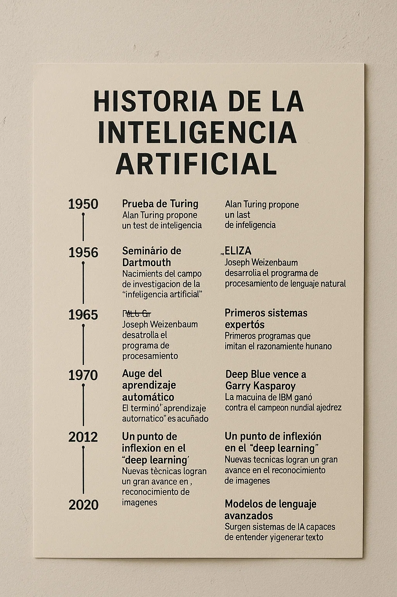
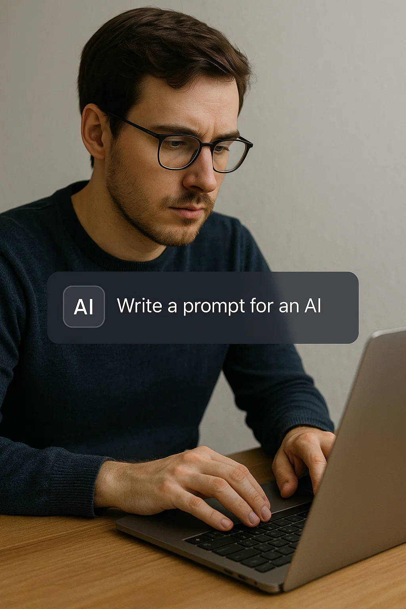

Charla sobre Inteligencia Artificial
Introducción: “¿Y si te dijera que la inteligencia artificial ya está tomando decisiones por ti todos los días, desde qué canción escuchar hasta cómo llegar más rápido a casa?”
1. ¿Qué es la Inteligencia Artificial?
Objetivo: Explicar qué es la IAInteligencia Artificial: Tecnología que imita funciones humanas como el aprendizaje. de forma sencilla, desmitificando ideas erróneas.

Contenido
- Definición: La IA es la capacidad de una máquina para imitar funciones humanas como el aprendizaje, el razonamiento, la percepción o la toma de decisiones. No es magia, sino un conjunto de algoritmos y datos.
- Analogía: Compara la IA con una receta de cocina. Los datos son los ingredientes, los algoritmos son las instrucciones, y el plato final es la tarea que la IA realiza.
Ejemplo Práctico
Muestra una imagen de un asistente virtual como Siri. “Cuando le preguntas a tu celular ‘¿qué tiempo hace hoy?’, la IA escucha tu voz, la convierte en texto, busca información y te responde. Todo en segundos.”
Dinámica
Pide a cada persona que nombre una tarea que le gustaría que una máquina haga por ellos (ej. “organizar mi agenda”). Usa esto para explicar que la IA ya puede hacer algunas de esas tareas.
2. Tipos de IA: Desde lo básico hasta lo avanzado
Objetivo: Mostrar que no toda la IA es igual, y que hay niveles de complejidad.

Contenido
- IA Estrecha: Diseñada para una tarea específica. Ejemplo: Netflix recomendando películas.
- IA General: Capaz de realizar cualquier tarea intelectual como un humano. No existe aún.
- IA Súperinteligente: Una IA que supera a los humanos en todo. Es especulativa.
Ejemplo Práctico
IA Estrecha: Usa una captura de pantalla de recomendaciones de YouTube. “YouTube usa IA para aprender qué videos te gustan, pero no puede escribir un libro.”
IA General: Usa a JARVIS de Iron Man para ilustrar, pero aclara que no es real aún.
Dinámica
Divide al grupo en parejas y pide que discutan si prefieren una IA que haga una sola cosa muy bien o una IA general. Luego, que compartan sus ideas.
3. IA en la vida cotidiana: ¿Dónde la usamos?
Objetivo: Hacer que los participantes reconozcan cómo la IA ya está en sus vidas.
Contenido
- Asistentes virtuales: Siri, Alexa, Google Assistant.
- Redes sociales: Algoritmos que deciden qué ves en Instagram.
- Comercio: Recomendaciones en Amazon o detección de fraudes.
- Salud: Diagnósticos médicos asistidos por IA.
- Transporte: GPS con IA (Waze) o autos autónomos.
Ejemplo Práctico
Muestra un video de un auto autónomo de Tesla. “La IA ve el entorno con cámaras, decide cuándo frenar o girar.” O usa Google Translate para traducir una frase en tiempo real.
Dinámica
Pide a cada persona que comparta una app que usa a diario. Explica cómo la IA está detrás (ej. Spotify usa IA para playlists).
4. Cómo funciona la IA: Una mirada sencilla al motor
Objetivo: Explicar los fundamentos de la IA sin tecnicismos.
Contenido
- Datos: La IA necesita grandes cantidades de información para aprender.
- Algoritmos: Reglas matemáticas que procesan los datos.
- Entrenamiento: La IA “aprende” ajustándose con ejemplos.
Ejemplo Práctico
“Google Photos encuentra fotos de playa porque fue entrenada con millones de imágenes etiquetadas como ‘playa’.” O explica cómo una IA como ChatGPTModelo de lenguaje que genera texto conversacional. responde preguntas.
Dinámica
Muestra 5 imágenes de animales (3 perros, 2 gatos). Pide al grupo que “entrenen” una IA imaginaria diciendo si cada imagen es “perro” o “gato”.
5. El futuro de la IA: Oportunidades y desafíos
Objetivo: Inspirar sobre las posibilidades de la IA, pero también abordar preocupaciones éticas.
Contenido
- Oportunidades: Medicina (predicción de enfermedades), educación (tutores personalizados), medio ambiente (optimización de energía).
- Desafíos: Privacidad, empleos, sesgos en los datos.
Ejemplo Práctico
Oportunidad: AlphaFold resolvió el plegamiento de proteínas, ayudando a crear medicamentos.
Desafío: Una IA de reconocimiento facial confundió a personas de ciertos grupos étnicos.
Dinámica
Pregunta: “Si pudieras usar la IA para resolver un problema del mundo, ¿cuál sería?” Da 1 minuto para que cada persona piense y comparta.
Cierre
Resumen: La IA es el presente, no solo el futuro. Aprendimos qué es, sus tipos, cómo se usa hoy, cómo funciona, y sus oportunidades y desafíos.
Conclusión: “La inteligencia artificial no es solo el futuro; es el presente que tú puedes moldear, ¡así que empieza a explorar, preguntar y crear con ella hoy mismo!”
Preguntas: Invita al grupo a preguntar o reflexionar: “¿Qué les sorprendió más de la IA hoy?”
Recursos: Explora más en xAI o busca videos introductorios sobre IA en YouTube.
Historia de la Inteligencia Artificial
400 a.C.
Autómatas en la Grecia antigua, como la paloma mecánica, representan los primeros intentos de máquinas con movimiento propio.
1950
Alan Turing publica “Computing Machinery and Intelligence” y propone el Test de Turing para evaluar la inteligencia de las máquinas.
1956
Conferencia de Dartmouth: John McCarthy acuña el término “inteligencia artificial”, marcando el nacimiento de la disciplina.
1965
Joseph Weizenbaum crea ELIZA, un precursor de los chatbots que simula conversaciones humanas.
1980s
Auge de la IA con sistemas expertos (ej. XCON) y avances en técnicas de aprendizaje profundo.
1997
Deep Blue de IBM derrota al campeón mundial de ajedrez Garry Kasparov, mostrando el poder de la IA en tareas específicas.
2011
Apple lanza Siri, popularizando los asistentes virtuales basados en IA.
2012
AlexNet revoluciona el reconocimiento de imágenes con avances en aprendizaje profundo.
2016
AlphaGo de DeepMind vence al campeón mundial de Go, un hito en IA estratégica.
2020
AlphaFold resuelve el problema del plegamiento de proteínas, impulsando avances en biología.
2025
La IA está integrada en salud, educación y transporte, con debates éticos en curso.
Inteligencias Artificiales en 2025

Descubre las 10 IAs que están transformando el mundo, desde asistentes conversacionales hasta creadores de videos.
| IA | Enfoque | Ejemplo | Aspecto Ético/Técnico |
|---|---|---|---|
| ChatGPT 5 (OpenAI) | PLNProcesamiento de Lenguaje Natural: Tecnología para entender y generar texto. avanzado y asistencia conversacional | Crear un informe de marketing | Privacidad de datos y automatización de empleos |
| Grok (xAI) | Respuestas veraces y razonamiento crítico | Explicar el cambio climático | Imparcialidad en temas controvertidos |
| Claude Haiku/Sonnet (Anthropic) | Automatización de tareas y texto seguro | Gestionar correos electrónicos | Alineación con regulaciones como AI Act |
| Gemini (Google) | Multimodal y agentes autónomos | Planificar un viaje | Personalización para marketing |
| DeepSeek R1 (DeepSeek) | Texto y código a bajo costo | Crear aplicaciones web | Reducción de huella energética |
| DALL·E 4 (OpenAI) | Imágenes hiperrealistas | Diseñar un logotipo | Debates sobre derechos de autor |
| Midjourney 6 | Imágenes artísticas personalizadas | Crear pósters para eventos | Datos de entrenamiento no regulados |
| Synthesia | Videos con avatares de IA | Video tutorial multilingüe | Riesgos de deepfakes |
| Runway Gen-3 | Generación y edición de videos | Anuncio animado | Manipulación de contenido |
| AlphaFold (DeepMind) | Investigación científica | Diseñar terapias para cáncer | Alta demanda energética |
Tendencias Clave
En 2025, los agentes de IA lideran la automatización, ejecutando tareas complejas. La ética es central, con regulaciones como la AI Act exigiendo transparencia. La sostenibilidad impulsa modelos eficientes como DeepSeek, mientras la creatividad florece con herramientas como DALL·E y Midjourney, aunque persisten debates sobre derechos de autor y desinformación.
Cómo Crear un Prompt Efectivo
Aprende a diseñar instrucciones claras para obtener las mejores respuestas de una IA. Es como darle una receta precisa a un chef: ¡los ingredientes correctos dan resultados perfectos! Sigue estos 6 pasos para dominar la Ingeniería de Prompt.
1. Identifica el Objetivo
Qué hacer: Define claramente qué quieres que la IA logre (ej. responder, generar contenido).
Ejemplo: “Quiero que la IA explique qué es la inteligencia artificial para principiantes.”
Consejo: Piensa en una tarea específica para evitar respuestas vagas.
2. Proporciona Contexto
Qué hacer: Incluye información sobre el público o propósito.
Ejemplo: “Explica la IA a 6 adultos sin experiencia técnica en una charla.”
Consejo: El contexto adapta la respuesta a tus necesidades.
3. Sé Específico
Qué hacer: Detalla formato, tono, longitud y restricciones.
Ejemplo: “Explica la IA en 100 palabras, tono amigable, con ejemplo de Siri.”
Consejo: La especificidad asegura resultados útiles.
4. Incluye Ejemplos
Qué hacer: Proporciona un modelo de respuesta esperada.
Ejemplo: “Escribe un correo como: ‘Estimado Juan, te invitamos a nuestra charla de IA.’”
Consejo: Los ejemplos guían el estilo y formato.
5. Define Restricciones
Qué hacer: Indica qué evitar (ej. jerga, temas sensibles).
Ejemplo: “Sin términos como ‘algoritmo’ ni referencias a ciencia ficción.”
Consejo: Las restricciones mantienen la respuesta relevante.
6. Prueba y Ajusta
Qué hacer: Revisa la respuesta y reformula si es necesario.
Ejemplo: Si es técnica, ajusta: “Usa solo ejemplos cotidianos.”
Consejo: Iterar mejora la calidad del prompt.
Ejemplo de Prompt
Prompt: “Explica qué es la inteligencia artificial en un párrafo de 100 palabras, dirigido a un público general sin experiencia técnica, con un tono amigable y un ejemplo cotidiano como Siri. Evita términos técnicos como ‘machine learning’ o ‘algoritmos’. Incluye una analogía simple, como comparar la IA con una receta de cocina. La respuesta debe ser clara y motivadora para inspirar curiosidad.”
Respuesta esperada: “La inteligencia artificial es como una receta de cocina: con datos e instrucciones, las máquinas hacen tareas humanas, como pensar o decidir. Por ejemplo, cuando usas Siri para buscar una canción, la IA escucha, entiende y responde en segundos. No es magia, ¡es tecnología que aprende! La IA está en Google Maps guiándote a casa o en Netflix sugiriéndote películas. Es una herramienta que nos ayuda a diario y sigue creciendo, lista para que la explores.”
Mejor IA para Marketing en 2025
HubSpot Breeze es la mejor IA para marketing en 2025 por su versatilidad, facilidad de uso y enfoque ético. Crea contenido optimizado, automatiza campañas y analiza datos, ideal para pequeñas y medianas empresas. Su plan gratuito y precios desde $20/mes lo hacen accesible, mientras cumple con regulaciones como la AI Act de la UE.
A continuación, una comparativa de HubSpot Breeze con otras IAs relevantes para marketing, destacando sus enfoques y consideraciones.
| IA | Enfoque | Ejemplo | Costo (desde) | Aspecto Ético/Técnico |
|---|---|---|---|---|
| HubSpot Breeze | Marketing integral: contenido, correos, análisis | Crear un blog SEO o enviar correos personalizados | $20/mes | Cumple con privacidad (AI Act) |
| Synthesia | Videos con avatares de IA | Video tutorial multilingüe | $22/mes | Riesgos de deepfakes |
| DALL·E 4 (OpenAI) | Imágenes hiperrealistas | Diseñar un logotipo | $20/mes | Debates sobre derechos de autor |
| Midjourney 6 | Imágenes artísticas | Pósters para eventos | $10/mes | Datos de entrenamiento no regulados |
| Claude Haiku/Sonnet | Automatización y texto seguro | Gestionar correos | $20/mes | Alineación con regulaciones |
Tendencias y Consideraciones
En 2025, los agentes de IA como HubSpot Breeze lideran la automatización, personalizando campañas con datos en tiempo real. La ética es clave: herramientas deben cumplir con regulaciones de privacidad y evitar sesgos. La sostenibilidad impulsa modelos eficientes, mientras la creatividad crece con IAs visuales, aunque persisten debates sobre derechos de autor y desinformación.
Impacto en las Carreras Profesionales
Objetivo: Mostrar cómo la IA transforma las profesiones, creando desafíos y oportunidades.
La inteligencia artificial está cambiando el mundo laboral, automatizando tareas repetitivas, mejorando profesiones existentes y creando nuevos roles. Mientras algunos trabajos enfrentan riesgos, otros se benefician de herramientas como HubSpot Breeze, y surgen oportunidades para quienes se adapten.

Carreras Afectadas
| Nivel de Impacto | Ejemplos de Carreras | Efecto de la IA |
|---|---|---|
| Alto (Riesgo de Automatización) | Entrada de datos, telemarketing, operarios de líneas de ensamblaje | La IA reemplaza tareas repetitivas, reduciendo la demanda de estos roles. |
| Moderado (Aumentación) | Marketing, atención médica, educación | La IA mejora la productividad (ej. diagnósticos asistidos, campañas personalizadas). |
| Bajo (Nuevas Oportunidades) | Éticos de IA, científicos de datos, ingenieros de prompts | Surgen roles para diseñar, entrenar y supervisar sistemas de IA. |
Oportunidades
- UpskillingCapacitación en nuevas habilidades, como usar herramientas de IA.: Aprender a usar IA (ej. prompts) o programar abre puertas.
- Habilidades humanas: La creatividad, empatía y liderazgo son cada vez más valiosas.
- Nuevos roles: Profesiones como entrenadores de IA o especialistas en ética están en auge.
Desafíos
- Desplazamiento laboral: Algunos trabajos desaparecerán, requiriendo reconversión.
- Capacitación: Es necesario invertir en educación para adaptarse.
- Ética: Decisiones de IA en contratación o evaluación pueden ser sesgadas.
Ejemplo Práctico
Los profesionales de marketing usan HubSpot Breeze para automatizar campañas, liberando tiempo para estrategias creativas. Al mismo tiempo, nuevos roles como ingenieros de promptsProfesionales que diseñan instrucciones para IAs. están surgiendo para optimizar herramientas como ChatGPT.
Dinámica
Pide a cada participante que nombre un trabajo que crea que la IA podría cambiar. Discute si la IA lo reemplazaría o lo mejoraría (ej. un médico usa IA para diagnósticos, pero no es reemplazado).
Encuesta para Participantes
Objetivo: Queremos conocer tu opinión sobre la charla para mejorar en el futuro. Por favor, completa esta breve encuesta que incluye preguntas sobre lo que aprendiste, tus intereses y áreas de mejora.
Completar EncuestaNota: La encuesta se abrirá en una nueva pestaña. Tus respuestas serán almacenadas de forma segura en Google Forms.